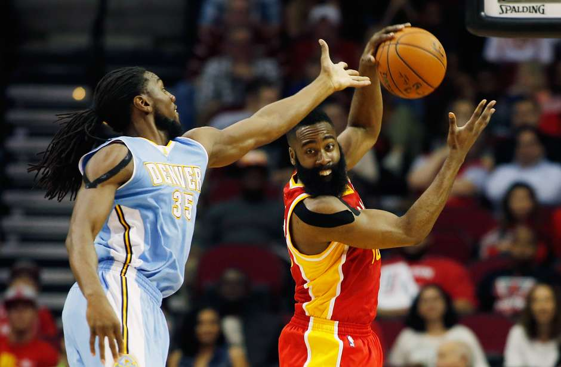

| Site Esporte.com | |||
| Principal | Futebol | Basquete | Vôlei |
Esse barbudo... Harden brilha com 50 pontos em dia de festaO ala-armador James Harden não pode escolher melhor noite para ter o maior brilho de sua carreira. Em dia de comemoração nesta quinta-feir pelo 20º aniversário da conquista dos dois títulos consecutivos do Houston Rockets, o "barbudo" alcançou sua melhor marca como profissional, ao fazer 50 pontos na vitória do time vermelho sobre o Denver Nuggets por 118 a 108 no Toyota Center. Harden bateu seu recorde pessoal diante de lendas dos Rockets da década de 1990 como Hakeem Olajuwon, Clyde Drexler, Mario Elie, Robert Horry e Vernon Maxwell, na partida em que a equipe de Houston venceu o Denver Nuggets em sua quadra. |
|||
| Desenvolvido por Rafael dos Santos Braz - 2015 | |||